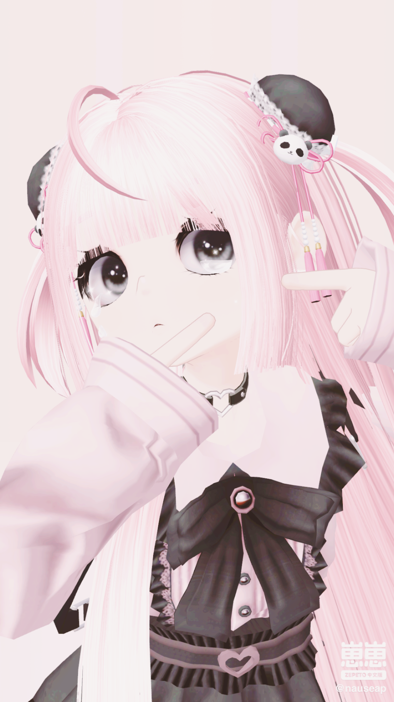
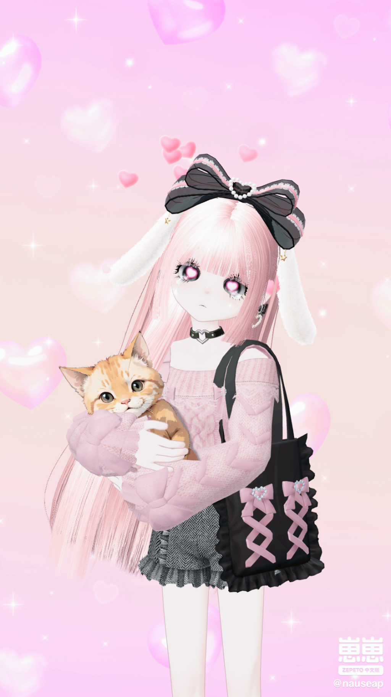
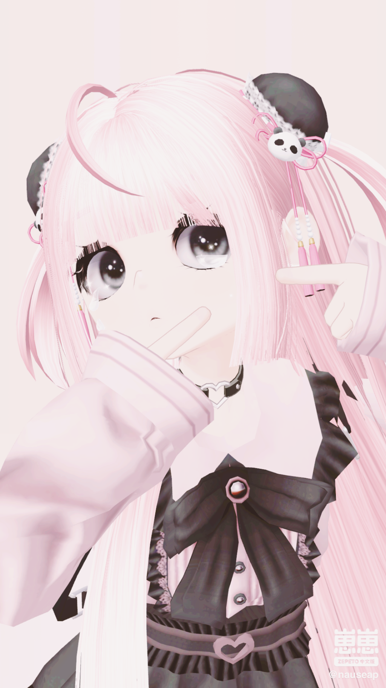
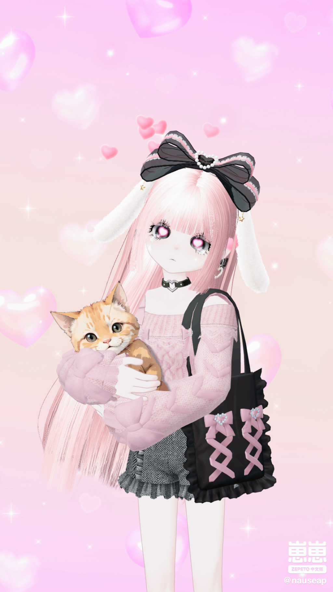
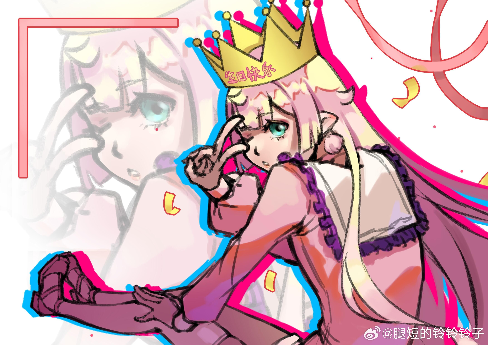
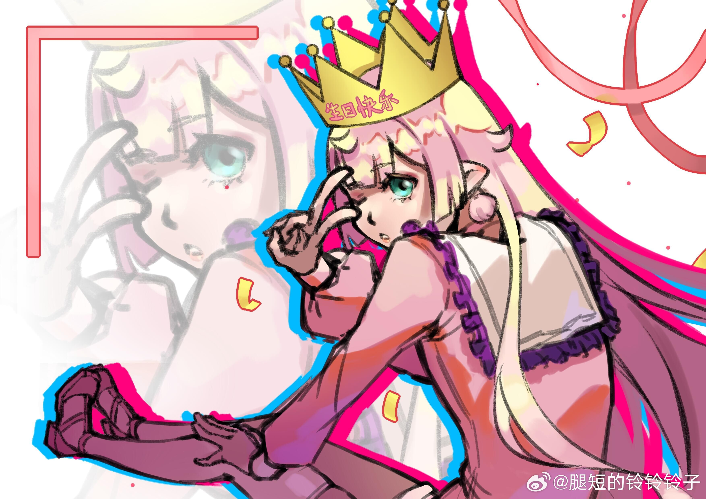

花瓶般的女人
<改>
写作：约稿&重写。请支持小虾吧。
雪白笔挺的两腿迈过棕水坑旁散乱的塑料袋，星野轻轻揉了揉疲惫的眼睛，托马斯仰头叹了一口气，手拢在兜里。他们沿着狭窄的街道缓缓前行，两侧的黑色楼宇像是被时间侵蚀的碑石，层层叠叠地挤在一起。蜂窝般的窗户散发着暗淡的黄色灯光，墙面盘绕着锈迹斑斑的管道，仿佛长久未被清理的蛛网垂落下来。街上的喧嚣和轰鸣声透过厚重的墙壁隐约传来，偶尔还夹杂着几声笑语和争吵。
此时是一种民俗日历中的新年节日，虽然听起来相当隆重，但是类似的节日在青河这样一座如此融合的城市中已经不值得多见怪了；不巧的是，米歇尔却是无比重视这个“新年”的那类人，每年都要花上一定的时间举办某种特定的仪式以庆祝这个“新年”的到来，例如在窗户上贴上透明的大花纹样贴纸、在家里挂彩灯之类的。用米歇尔的话来说，现代人真是活得太忙碌了，所以必须存在一个完全放空的节点来表示忙碌的结束和下一段忙碌的开始——而那个节点对他来说恰好是这个新年罢了。并且，既然好不容易给自己留下一个休息的时间段，那么何苦不笑着过呢？
总之，米歇尔就这样保持信条似的每年过着他的新年，到点就丢下一切工作，甚至撇下天堂的人员库不管，闹得许多公务人员苦不堪言；给自己放假的日子里，米歇尔看似整天把微笑挂在嘴上，星野却明显地能感觉到他的不安：他理解毕竟天堂的那份工作确确实实是切不断的，放置强迫自己着不去思考总会引向更复杂的焦虑情绪；于此同时出现的还有态度的变化，米歇尔变得对自己的一举一动过分地敏感，一副做错了什么的样子。
终于星野尝试引出一些话：“总觉得你好像很在意我的想法。新年…让你觉得有负担吗？” 他停顿了一下，观察着米歇尔的反应，补充道，“如果你觉得不自在，我们可以做些别的。”
双手抱头，深吸一口气，米歇尔艰难地开口：“到了你家后我才恢复了很久很久以前过新年的习惯。我——我不是要指责什么，”
布料传来摩擦的声音，米歇尔低头的视野中出现了星野伸过来的手，他下意识地将自己的手从头顶卸下塞入了那只手中。“只是在你这里我才有恢复习惯的契机。我甚至都对这之前的‘很久很久’没有什么印象了，我只觉得自己的脑子很混乱，然后就过去了很久，我对此毫无察觉。某天当我再醒来时，我只是突然发现我已经活了五百年了，床头的日历居然恰好能翻上五个世纪。好吧，也不是某项习惯，我只是恰好有这个机会把我觉得快乐的事情重新搬上台面，我没想到又这么麻烦。所以我一直认为对不起你，除了那些说了无数次的，我总觉得是我让你的生活难以恢复了：突然闯进的人也好，新年节日也好，让你强制处在我的情绪下令我非常不好受…”
“不用说对不起，你只是做你想做而已，没做错什么。”米歇尔感觉星野的声音在特定的情形下令人无比安心。“你很努力又周全。我只想能帮上你的忙就好了，现在的你需要具体什么帮助呢？”
米歇尔抬头直视星野的眼睛，短接之际，米歇尔又撇开视线，“我想……我想真正去接受我所想的改变，详细地说，我想结束去年，把游魂般的日子转化为那种有具体的感触的日子，“
米歇尔感觉自己说错了话。等等，那之前的日子怎么算？难道和星野的那些体验不算什么吗？！米歇尔感觉自己刚刚的无视行为很可怕，不过星野的鼻息声依旧如死水一般平静。硬着头皮继续说下去：“我想要真正地休息一会。我希望在此之中不仅能让我快乐一些，我希望也能让你笑一笑……”
好尴尬！他听到星野轻叹了一声。
紧接着地：“现在我们出发，出去走走吧。你想去哪？”
“我想去贫民窟那……”节奏太快，还没等跟上话题转换词语就不经思考就脱了口，米歇尔从星野的表情上读出了一丝困惑，好吧，他也说不上来，为什么是贫民窟？！不过星野似乎很快就转换了状态，开始准备出门，米歇尔见状也跟着走进了换衣间，算了。
“对了，别忘了叫上托马斯。”
现当下三人正漫步在黄昏的街道。
”咳嗯！“托马斯哼了一声，在淡淡的疲倦氛围中惹人注目。“这里居然还有人住。”
“嗯。”星野点了点头，并未多言，只是一直向前走。
米歇尔走在他们身后，目光掠过街边那些晾晒着衣物的铁架。灰扑扑的布料随风飘荡，像是点缀在单调混凝土上的残破旗帜。“很久没见到有人这么晾衣服了，”米歇尔心想，嘴角浮现一丝不易察觉的笑意，“让我想起以前的日子。”
他们经过一扇破旧的木门，一个女人靠在门框上。她穿着一件显得过大的黑色外套，袖子盖住了手，胳膊交叉着护在胸前。拉链拉到领口，露出一片苍白的皮肤。她的脸上涂着厚重的粉，却掩盖不住凹凸不平的痕迹。她咧嘴笑了笑，露出缺了几颗牙的嘴，目光在星野身上停留了一会。
星野佯装不在意地回以一个微笑。米歇尔站在一旁，视线停留在那个女人身后的幽深门廊。他的目光渐渐转向星野，脑海里不知为何浮现出某些桃色的画面，视野逐渐模糊，星野来到过这里吗？这里的人也是这样生活的吗？意识到再想下去又没完没了了，他迅速移开目光，脸上的神情未曾改变。
“我说，好久没过节了！”托马斯忽然打破了沉默，她双手枕在脑后，仰望着天边，“小时候，爸爸妈妈会带我去逛花灯街呢。这里怎么连个花灯都没有？”
星野抬头看了一眼天际，橙色的暮光像是轻轻晕染在深蓝的画布上，带着一种暮气沉沉的美感。三人一时无言，只觉得胸口有些发闷，像是被这压抑的街道吞噬了一部分空气。
就在这时，街道尽头忽然亮起了光。两架盘旋的无人机缓缓飞来，带着辐射状的细丝，细丝连接着一些仿纸质的彩灯。彩灯的形状是一条条游动的彩色鲤鱼，它们围绕着纸糊的祥云，散发出幽幽的荧光。鲤鱼摇摆着尾巴，活灵活现地穿梭在街道上空。
“这真稀奇。”米歇尔低声说道，眼中闪过一丝好奇，“仿生体上的神经线，大概是从那些废弃的实验室里拆下来的。”
星野看着那些彩灯，嘴角不自觉地上扬了一点点。窗边，一个小男孩探出头，手里拿着遥控器，兴奋地操控着那些灯鱼。街道上渐渐热闹起来，孩子们从黑暗的门廊中跑出来，手里提着各式各样的自制灯笼。兔子灯、鸟灯、还有红纸箱上掏了洞改造的简易灯笼，它们通过电线连接着木棒，发出微弱的黄色光芒。
“居然还有人过年啊。”托马斯瞪大了眼睛，脸上露出久违的笑容，“真怀念啊！”
一个小女孩跑到托马斯面前，拉住她的手，将她拉进了人群中。托马斯眯起眼睛，笑着跟着孩子们蹦蹦跳跳，像是彻底融入了这片喧闹的欢乐。
星野站在原地，目光跟随托马斯。他并未参与，只是安静地注视着人群，米歇尔的目光也落在托马斯身上，看着她无忧无虑的笑容，心中却泛起一丝复杂的情绪。
星野忽然看向米歇尔：“米歇尔，这样下去不行。”米歇尔一怔，还没等他反应，星野就拉住他的手就向托马斯的方向走去：“问问托马斯吧。”
米歇尔有些犹豫，但还是默许了。星野总是不给人拒绝的机会。
星野走到正在和孩子们玩耍的托马斯身边，简单地说了句：“托马斯，过来一下，我们也想请你帮忙。”
托马斯有些不舍地离开了孩子们，跑到星野和米歇尔身边，仰着头，故作老成地掐着鼻音问：“怎么啦？有什么事是我托马斯大人解决不了的吗？”
米歇尔看着托马斯稚嫩的脸庞，忍不住笑了笑。星野稍作思考，选择性地说道：“米歇尔最近有些烦恼，似乎对过去的事情有些放不下，能不能请你给他一些建议？”
托马斯听完后，双手抱在胸前，皱着眉头，一副小大人的模样。她清了清嗓子，慢悠悠地说道：“米歇尔，其实这事儿特简单。你就是责任感太强，放不下工作。总想着要对天堂负责，其实是放不过自己。”
她顿了顿，又补充道：“天堂又不是没了你就不转了，就算真出了什么事，不还有其他人顶着吗？你同事不照样休假吗？你呀，就是想太多！”
米歇尔看着托马斯一本正经的样子，心中感到有些好笑。他知道托马斯是在努力安慰他，虽然话说得有些不解风情，但却意外地触动了他内心深处的一些东西。虽然他暂时无法完全接受，但托马斯的话却意外提点了他，不知道怎么做时——至少他可以试着学习一下“同事”们的休假态度，此前他从未想过仿照这样的模式；这莫名让他感到自己与现实感的联系，心里暖暖的。
“谢谢你，托马斯。”米歇尔轻声说道。
星野在一旁点了点头，说道：“说得对。别给自己太大压力。”
米歇尔深吸一口气，眼中闪过一丝动摇。他看着星野和托马斯，心中充满了复杂的情绪。
就在这时，托马斯的脚不小心踢到一个袋子。袋子滚开，一个奇怪的东西从里面滚了出来。那是一个紫色的婴儿形状的物体，头部过大，嘴巴微张着，肉嘟嘟的模样让人不寒而栗。
“这是什么？”托马斯猛地后退，躲到了米歇尔身后。
米歇尔皱起眉，走上前一步，将星野拉到自己身边。他抱住星野的肩膀，低声说道：“冷静点，别慌。”
托马斯透过米歇尔的肩膀，小心翼翼地观察那个紫色的物体，脸上充满疑惑和不安。
街边的那个女人，这时正蹲在地上，给一个孩子递糖果。她似乎察觉到了他们的目光，抬头看了他们一眼，脸上露出一丝羞赧的笑容。然后，她轻轻扭过身，腰肢柔软地摆动着，消失在黑暗的门廊中。
“这里的人……到底是什么样的生活？”托马斯皱着眉头，低声说道。
米歇尔没有回答。他沉默地看着那个紫色的婴儿形状物体，眼神里带着一丝复杂的情绪。
星野靠在米歇尔身旁，目光落在地上的塑料袋上，橙色的灯光将那袋子照得温暖如火焰。他的眼神渐渐失了焦距，像是在思考，又像是沉浸在某种回忆中。街上的孩子们欢笑着跑来跑去，彩灯在他们头顶飞舞，光影交织，将这片破旧的街区点缀得仿佛梦境。
但那紫色的东西依旧静静地躺在那里，像是某种诡异的注视。
托马斯躲在米歇尔身后，脸上的笑意已经完全消失，她紧盯着地上那个紫色的婴儿形状物体，咽了口唾沫：“那……会不会真是个死婴？”
米歇尔低下头，目光冷静而锐利。他蹲下身，捡起一根被遗弃的木棍，轻轻挑开塑料袋的一角，仔细地看着那个东西。“不是人类的……可能是仿生体的残骸。”他的声音平静，却透着一丝压抑的情绪。
星野站在一旁，默默注视着这一切。他的眼神游离，似乎有点不敢直视地上的东西。他并没有主动靠近，只是微微侧过头问：“这……是玩具？”
“玩具？”米歇尔用木棍戳了戳地上的东西。“如果这是玩具，那也太失败了！它的材质像是实验废料——你们来看这些接缝和裂纹，也许这是某种非法制造的仿生体。”
托马斯眯起眼睛，盯着那团紫色的东西，犹豫着问：“贫民窟的人……用这种东西做玩具？还是……”她的声音顿住了，表情有些复杂，“还是当成真的孩子？”
米歇尔眼神里隐约露出一丝厌恶和怜悯。他用木棍将那东西拨到一旁，站起身，拍了拍手上的灰尘，撵着托马斯走回星野身边：“我也说不清楚——别管了，这里什么稀奇古怪的东西都有。”托马斯不甘心地回头张望：“可是……”
她还想再说什么，但被星野轻轻拉住了手腕。“托马斯，”星野的声音很柔和，甚至带着一点哄劝的意味，“别管这些了。我们继续走吧。”
托马斯抿了抿嘴，最终没有再说什么。她的目光在那紫色的“婴儿”上停留了一会儿，然后跟着星野和米歇尔往前走去。
街道上的喧闹声渐渐变得清晰。随着他们的脚步越来越深入，贫民窟的另一侧显得有些不同了。许多孩子提着自制的灯笼在街上奔跑，灯笼的光芒映在他们的脸上，显得格外明亮。一些年长的人坐在门口，抽着烟，偶尔低声交谈，目光却不时扫向街上的那些彩灯，露出一丝怅然的神情。
托马斯的眼睛亮了起来。她像是被这些灯光吸引了一样，快步跑到人群里，跟着孩子们一起蹦蹦跳跳。她的笑声很轻快，甚至带着一点童真：“这些灯笼好可爱啊！他们居然还能用废铁和旧电线做出这么漂亮的东西！”
米歇尔站在原地，双手插在口袋里，目光淡淡地扫视着周围。他的目光落在一个坐在旧铁架上的老人身上。那个老人正在用一把钳子修理一盏破损的灯笼，动作缓慢而专注。米歇尔看了一会儿，心中不由得感慨：“在这种地方，过节大概是唯一能让人觉得自己还像个人的事吧。”这句话从他口中轻轻溢出，似乎是在对自己说。
星野站在米歇尔身旁，微微低着头。他看着托马斯在人群中欢笑的样子，似乎有些出神。比起自己的情绪，星野的一成不变反而令米歇尔更为在意，星野此刻在想些什么呢？米歇尔于是问道：“你不去陪她吗？”声音里有些意外，仿佛在试探。
星野愣了一下，摇了摇头：“她自己玩得挺开心的。”这话让米歇尔的心中涌起一丝复杂的情绪，他忍不住轻笑：“你总是这样。顺着她，惯着她，却从不真正参与她的快乐。”
星野没有回答，只是低声说了一句：“她喜欢就好。”这简短的话语，却让米歇尔的心绪更为复杂，他亟需整理……于是米歇尔没有继续说什么，只是放空自己的思绪。他的目光扫过街道尽头，那些无人机拉着的彩灯在天空中盘旋，像是某种奇异的梦境。童年的光景突然闯入了他的视野：小不点的自己住在一个有花灯街的地方，和家人一起穿梭在人群中，买糖人，看舞龙，那些回忆如同久违的温暖，微微让他的嘴角翘起，不过冷冷的寒风很快就如免疫程序一般扫走了那些虚无缥缈的回忆，迫使他脸上的神情又恢复了平静，紧接着的是一整空虚，这已经是自免疫病的程度了吧！米歇尔心中暗叹。或许这就是生活——夹杂着欢笑与无奈，过去与现在的交错，仿佛再美好的节日也无法抹去心底的孤独。
托马斯玩够了，满脸通红地跑了回来，手里还拿着一盏小小的兔子灯笼。她把灯笼举到星野面前，得意地说道：“看！他们送给我的！好可爱吧？”
星野微微一笑，轻声说道：“嗯，很可爱。”
托马斯像是得到了赞扬，笑得更加灿烂了。但很快，她的目光又落在了米歇尔身上：“你怎么不去玩？难得有这样的机会，你就不能放松一下吗？本托马斯大人说了要放下。看来你还没放在心上啊！”托马斯嘟嘴扮鬼脸。
米歇尔耸了耸肩：“这种热闹不适合我。”
托马斯撇了撇嘴：“无趣。”不过她感到米歇尔微妙地缓和了一些。
星野看着两人的互动，默默说道：“天色不早了，我们还是回去吧。”
托马斯收起了笑容，抬头看了看天色。暮色已经完全笼罩了贫民窟，四周的灯光虽多，但依旧无法驱散那种深沉的黑暗。她点了点头：“好吧。不过——”她抱紧手里的灯笼，嘴角又扬了起来，“我要把这个灯笼带回去！它是今天最棒的纪念品！”
三人往回走的时候，街道上的喧闹渐渐远去。托马斯小心翼翼地护着灯笼，星野跟在她身旁，时不时提醒她看路。米歇尔走在最后，时不时回头看一眼，像是在警惕着什么。
当他们再次经过刚才发现“婴儿”残骸的地方时，那团紫色的东西已经不见了。塑料袋空荡荡地躺在那里，被夜风吹得微微作响，像是嘲讽着他们短暂的停留。米歇尔忍不住在意：那到底是什么？又会是谁拿走了它？无数的疑问在他脑海中盘旋。
托马斯停下脚步，皱起眉头：“米歇尔你也注意到了吧。它……不见了？？”
“应该是被人拿走了——你知道的，这里什么人都有。”米歇尔看了她一眼，衰衰地说“只能说、别想太多。”米歇尔挥挥手赶走自动启动的思绪。
在两人对话时，星野的脚步没停地走在前头，仿佛对周围的一切都漠不关心。见状米歇尔回头快步追上了星野，心情不好么？他试图打破这沉闷的气氛，打趣道：“你也笑一笑吧。笑一笑对身体好！”米歇尔扯开嘴角，而星野只是淡淡地看了他一眼，嘴角微微上扬，没有发出任何声音，两人默契地对视了一眼，米歇尔忽然意识到自己多虑了，他相信星野自有应对一切的办法。
后面不远处的托马斯仍旧低头看着塑料袋，眼神里透着一丝不安。但最终，她什么也没说，只是紧抱着灯笼转身跟上了星野和米歇尔的脚步。
远处的街道上，彩灯依旧闪烁，孩子们的笑声时断时续。而在离他们不远的黑暗中，那个紫色的东西静静地被抱入了一扇紧闭的门后。谁也不知道它去了哪里，也不知道等待它的将是什么。
灯光逐渐远去，贫民窟在身后沉入阴影。托马斯抱着灯笼，突然说道：“明年我们再来吧！也许还能看到更多漂亮的灯笼。”
“明年……一起去跳舞吧。”米歇尔接了话茬。显然星野和托马斯都吃了一惊，率先开口的是托马斯：“什么？跳什么舞？去哪，去舞厅吗？星野你会跳舞吗？”她以夸张的转头幅度看向星野，星野连忙否认，于是她又猛地凑近米歇尔，“那么你会跳舞吗？”米歇尔挠头：“就是单纯的跳舞呀。今天你不是河贫民窟的小孩儿一起跳舞了吗？就是那么个跳法。”托马斯闭一只眼：“切，那你们今天不跳，现在就开始说明年该怎么样了。真是一群违心的家伙！现在知道本大人的玩法才是正解了吧……”
一路上，托马斯喋喋不休地复述着自己刚刚的行为，顺便融合了些自己的感受，扯着星野的耳朵企图把所有的话语都灌入星野的大脑
——贫民窟的夜晚依旧沉默而神秘，但今天的贫民窟可是遭了殃了。
0技术含量/后续：
托马斯、星野和米歇尔离开了贫民窟，沿着狭窄的街道向外走去。一路上，托马斯始终抱着那盏兔子灯笼，小心翼翼地护着它不被风吹灭。她的脸上还带着一丝意犹未尽的笑容，而星野则安静地跟在她旁边，偶尔提醒她注意路上的障碍。米歇尔走在最后，神情依旧淡然，但目光不时扫向四周，像是在确认什么，又像是在沉思。
星野和托马斯
回到住所的第二天，托马斯躺在沙发上，手里摆弄着兔子灯笼，灯笼的光芒映在她脸上，显得格外柔和。
“星野，你说那些孩子，他们每天都住在那样的地方，真的……开心吗？”她的声音轻轻的，有些飘忽，像是自言自语。
星野翻了一页手里的书，抬起头看了她一眼：“大概是吧。至少昨天看起来，他们比米歇尔开心。”
托马斯撇了撇嘴：“你总是这样，回答得模模糊糊的。”她抱着兔子灯笼坐起来，双手托着下巴，认真地说道，“可是我觉得，他们的笑容里有点……不对劲，像是很努力在装开心。”
星野愣住了，似乎想要反驳，但最后只是轻声说道：“也许是这样吧。很多人都这样。”
“喂！见怪不怪了是吗？”托马斯跳起，说完后，她低头看着兔子灯笼：“不过，至少昨天我是真的开心。那些灯笼、那些孩子的笑声……让我想起小时候的日子。虽然，这里和花灯街的热闹完全不一样。”她的声音渐渐低了下来，最后变成了一声轻轻的叹息。
星野伸手揉了揉她的头发：“那就记住这些美好的瞬间吧。不是每次漫步都能遇到这样的场景。”
托马斯回头看着他，脸上露出一个狡黠的笑容：“你呢？你昨天玩得开心吗？”
星野微微一怔，然后笑了笑：“我没有玩。看你们开心，我也觉得挺好的。”
托马斯捶了他一下：“你这个闷葫芦！下次要一起玩才行！”
米子的内心世界
与托马斯的轻松和星野的坦然不同，米歇尔始终没有完全放下那天的经历。他站在阳台上，手里夹着一根烟，却迟迟没有点燃。他的目光越过落地窗外鳞次栉比的高楼，看向远处灰蒙蒙的天空，脑海里不断浮现出贫民窟里的画面：孩子们脸上纯真的笑脸、随风摇曳的简陋灯笼、破败不堪却又充满生活气息的墙壁，以及那个被随意丢弃的紫色“婴儿”。
“那些东西不该存在的……”他低声自语，像是在说服自己，又像是在质问什么。
米歇尔想起那个女人羞赧的笑容，想起她消失在门廊黑暗中的身影。他并不知道她的名字，也不知道她的故事，但那一瞬间他的心里似乎生出了一种复杂而难以言喻的情绪——怜悯？愤怒？还是某种深深的无力感？他感到自己仿佛被卷入了一个漩涡，无法挣脱。
他深吸一口气，强迫自己将思绪拉回到现实，想起托马斯和星野的模样。托马斯脸上的笑容是那么明亮，却又那么脆弱，仿佛一碰就会碎裂；星野的沉默里则藏着太多他看不透的东西。米歇尔始终明白自己的多情，但总是藏着掖着不愿面对，不仅仅是对情绪——他也掖着自己的脆弱和无奈。随着星野和托马斯的回忆在他心中回荡，他仿佛闻到了一丝生活的苦辣酸甜味，将他的感官带回现实，随着日历的报时声响起，忽然之间，米歇尔感受到，自己心中有什么东西开始流动了。
“真奇怪。”米歇尔轻笑了一声，将手中的烟扔进了垃圾桶。
原文：心理承受能力低下者请勿阅读！
undefined
雪白笔挺的两腿迈开，跨过卧在棕水坑的黑塑料袋团，星野泪人捂着嘴打个哈欠，托马斯罩起嘴仰头长叹，他们看向狭窄的街道，两边排布着瘦薄的黑色楼宇。这些大楼犹如坟山上的墓碑一样拥挤地盘踞在一起，墙面爬满蜂窝煤洞般的窗户，灯光稀稀落落的，都是不干不净的黄色， 窗边盘绕着黑亮的管道，仿佛耷拉的口水，长长地垂下来，轰鸣和尖锐的叫嚷隐隐地透过那些暗色的墙，外面有铁质的架子，上面稀稀落落地挂着一些服装随风飘着，点缀单调的混凝土腻子墙壁。
现在还有人晾衣服，真是令人怀念啊，米歇尔心想。要是在市区，这样的方式。
配合漆黑的街道，一切像是结构主义的构成
前面有个上半身显出花瓶形状的人，她靠着布满油渍的木门框，黑色大外套的袖子盖没了手，胳膊交搭着捂住肚子，拉链被拉到领口，露出布满鸡皮疙瘩的大胸，一抹全世界最难被买走的玫红色挡着乳头，厚重的白粉在她脸上结了许多疙瘩，她对他们笑，星野泪人朝她笑。
米歇尔看着她背后幽深的门廊，看看星野泪人，想到他在自己身下，不停扭动窄细的粉胯，舞弄绯红的脸，也露出这样的笑，宛如一团被摔在地上的鱼扑腾出的血水，他如山岳般笼在他身上，轻抚他肿胀的屁股，轻声告诉他不要这么辛苦，只要放松，好好趴在他的臂膀里，感受他的吻。
“我说，好久没过年了！记得以前，爸爸妈妈会带我去逛花灯街呢，这儿怎么没花灯呢？”托马斯把手垫在脑后，惆怅地望向天边。
橙色暮光腮红般氤氲在深蓝色的天际线，恍若谁咽气前的最后一丝气息，三个人一齐感到窒息，望向幽黑的街道尽头，花灯飘来了，两家黝黑的盘状无人机下集着一圈呈辐射状散开的细线，连着扭成c型的彩色鲤鱼，游动的龙瞪着汤圆般的大眼睛张牙舞爪，周身围绕着纸糊的祥云，围绕着河流般的细线，发出幽微的荧光。
街边的一扇窗子被推开，拿着遥控器的小孩嬉笑着按着操纵杆。
“从仿生体上拆下来的神经线……”米歇尔的眼睛闪着不明的光，压着嗓子说。
温暖的橙光撒上街道，橙光点在黑塑料袋上，温暖如小小的火苗，笑声飘扬，小孩子们从黑门里钻出来，提着发着橙光的四方形兔子，斜举着扁盒子翅膀的小鸟，或者一个掏了洞的红纸箱，它们靠各色起皮的电线连着手里的木棒，散发出窗子里那种脏兮兮的黄光。
托马斯惊奇地低头四望，喜笑颜开地喊：“还有人过年的！好怀念呐！”
一个小孩拖着她的手，把她拉进孩子们中间，她紧紧眯起眼笑着，抓着裙摆蹦蹦跳跳，星野泪人迷茫地看着欢闹的人群，托马斯伴着舞步踢开那个袋子，一个人形的小东西滚出来，紫色的大头张着肉嘟嘟的嘴。
“死婴？”托马斯跳到米歇尔身后，米歇尔抱住又笑起来的星野泪人，托马斯越过他的肩，噘着嘴皱着眉看着它，他们一起惊恐地看向女人，在给一个孩子手里塞糖果的女人羞赧地看他们一眼，起身低下头，轻盈地扭过身子，腰肢便嬛地淹没在幽深的黑门廊里。
- 上原托马斯角色简介托马斯是一名人类女孩&前魔法少女，混极少的精灵血统。TMS16 岁时成为“魔法少女”（她被天使化的自己诱骗，将灵魂存入魂器，最终没有俸禄饿死在混乱大陆，分裂，成为活死人也就是 18 岁时），17 岁离家出走混乐队，18 岁成为活死人被 hsn 捡回税务局，如今在税务局生活了 3 年，每天的工作是帮 hsn 查档（卧槽盒，但是数据是 HSN 用米歇尔的军方外挂薅的，tms 只要查个数据库就行了）和总结任务信息。偶尔会被抓去围观 hsn 砍人，由于星野有时做任务手段比较极端，偶尔会被米要求去帮 hsn 收尸（把半死不活的 hsn 搬回家里）。名字像男名，是因为父母希望她如男孩一般，而当女孩需要承受许多偏见。同时，托马斯有精灵耳，这其实是返祖现象，但是父母都不知道自己家族谱系有精灵血统，因此 tms 遭受了许多家庭小矛盾。 托马斯成长于青河大陆的西郊区，父亲是一名商人兼艺术家，母亲则是一位职场女性。尽管家庭氛围整体幸福，但偶尔的误解与矛盾始终让她感到不安。她的“芯片过适应病”让她在网络空间中获得更强的真实感，使得她在虚拟世界中游刃有余，但却也使她逐渐与现实产生了隔阂，但是她有一些很真挚的好友，这令她有实感，所以她非常看重和朋友的友情。现在的阶段是，托马斯在经历了和 hsn 等人的夏日度假后，已经完全混入了 hsn 的茶友小团体。 -Hsn 的小团体：hsn 的邻居涟漪，hsn 的男友米歇尔，hsn 的茶友楽，其实是米歇尔提议要让 hsn 多招待一下朋友，担心 hsn 太寂寞而形成的，每个人都很溺爱 hsn，虽然涟漪是一名毒妇（无意识地嘴恶，但是至少性格很飒爽，而且年龄很大） TMS 最近正在陷入自我认知的困境。


 的照片墙
的照片墙  gogh捏人
gogh捏人  约稿：忘了画师名字
约稿：忘了画师名字  饼子子捏人
饼子子捏人  捏人
捏人  gogh捏人2
gogh捏人2  Gogh捏人3  
Gogh捏人3    
  更多链接6
更多链接6 - 星野涙人角色简介他的姓氏星野来源于研究所的代号，名字来源于米歇尔。星野涙人是一个复杂而神秘的存在，他的一生充满了创伤和对意义的追寻。他原本是杀人兔种族的一员，在他的种族被清除后，他遭受了可怕的虐待和实验。这导致他变成了欧米茄，生殖系统遭到破坏，并产生了根深蒂固的麻木感。星野作为神使复活后，被赋予了窃取灵魂和能力的力量，成为了一个阴暗组织圆桌会的 “清洁工”。他通过强烈的感官体验（主要是性爱）来应对零碎的记忆和缺乏与现实世界的联系，因此被称为 “滥交者”。尽管星野外表冷漠，但他渴望与人沟通，渴望稳定。他创建了一个隐蔽的家，在阅读和沉思中寻找慰藉。他的人际关系往往错综复杂，既有控制，又有依赖，还有在痛苦中绝望地寻找真情。虽然他吸引了米歇尔等权贵的注意，但他仍在努力调和过去的创伤和对未来的希望。他的故事是一个关于生存、适应以及在一个剥夺了他太多东西的世界中寻找自我的故事。
- 銀色的魔女
- 涟漪生前或许和空军有什么关系，但是当时总之是一名背刺姐，背刺别人太多了以至于下了地狱，或许存在着“偷改论文作者顺序功劳，擅自开走别人的飞机以至于追究错误到错误番号间接导致了朋友殒命，小时候房子塌了因为小恰好被卡在安全区其他人都死了”等桥段。很老了！大家对于涟漪的第一印象是一个非常傲慢的人，因此对过于不会表现情绪的人感到很头疼。 -能力和生育相关，以前的设定是杀死别人腹中胎儿，现在打算模糊一下写成“杀死腹中的生物”以便扩展！ -面相很年轻，目测二十岁左右的样子（实际在一千岁左右），眼睛是青绿色（偏绿，饱和度不高）；有一定的肌肉，健康匀称又视觉上很修长的身材，罩杯随心情和穿搭变化（因为不是人啊！）。 -在动物化的地狱成为了恶毒的蛇，异化生长出尖尖的黑黑的犄角，（于是有雅号是电光毒龙钻），年龄很大的地狱劳改犯（已出地狱版）；双性，在性方面态度比较顺其自然，正常人的范畴！ -武器是黑色的短柄镰刀（上面还别着几朵玫瑰花），然而并不怎么使用，只是起到威慑作用；在熟人面前甚至把镰刀当成道具用来凹造型，此时还会给镰刀缠上藤蔓；她的镰刀更多地被用于种田耕地，并不好用！但是她借此以消耗体力和消磨时间。 -其实非常向往成为天使或是神使，她的耳饰实际上是潮流版十字架，还是正着的，有巨多十字架choker，衣服也是浅色系巨多（更偏向少女感觉的衣服），公式的水手服甚至有十字架的印花。 -在HSN居所的湖心小岛过着田园生活，每天钓鱼种地，和hsn认识后偶尔去串门；平均一个月左右会出去购物，由于没有办法收起犄角所以需要混入爱好者们的队伍，此时会为自己和认识的人购买些伴手礼，真是惬意呢！然而除了当前选择的生活方式以外，无论是在地狱的时间还是活着的时候，她从来没有感到舒适过，一直想要摆脱当下的环境。 -最近培养了一个新爱好：捡小孩，涟漪寻找到许多在QH游荡又无家可归的幽灵体，并且建立了一座修道院以供他们居住。-对hsn的态度：虽然对hsn没有什么影响，但是涟漪接触hsn后感到很头疼，之前与自己交往的人里没遇到过这种真情实感“对对嗯嗯”又没其他话可说的人，甚至都不知道从背刺的角度该如何考虑！但是这样多了又会觉得hsn似乎总是在心安理得地接受，明明hsn不是那么理解自己，hsn似懂非懂又包容她的样子让她感觉自己反而被可怜与蔑视了！她极度地好奇hsn到底在干嘛和平时是怎么想的。她第三次左右去串门的时候就被hsn问到底为了什么而来：”是因为想草我吗？“涟漪实在太好奇了hsn究竟脑袋怎么长得为什么问这种话就和hsn上床了；之后收获了一枚听话的泄欲奴隶（此处可以插播一点G向的），在有一次被hsn问”你是否通过虐待我来构建自我“后破防地对hsn产生了一丝丝的恨意。 之后就是看着hsn逐渐变得幸福起来。什么？！我从没想过那种幸福的生活方式 为排解无聊仿照hsn建了一座修道院，主要目的是减少和唯一的邻居的交集。
- 电脑娘关于if线/轨道交通 青河 小白裙-上原托马斯 带有蝴蝶结的互联网形态 托马斯在ipv6的具体体现。她是极端的，疯癫的，举起手枪和锥子攻击图形符号，吞下子弹然后任凭血溅到沙发上；她也是带有束缚的禁欲殉道者，孜孜不倦地前往纯洁的圣地，不断地筑起自我的高台。 带有呆毛和长条耳坠的神经网络形态 托马斯在灭世（不是她灭的）后永远地活在了青河的神经网络之中。她只存在于一条坐标轴上：空间；她是神经网络的具象化，只能不断思考，不断延伸，不断生活，她是孤独的，孤独地永存在这场无休止的游戏里。昔日繁荣的中央大陆一片静寂，唯有仪器运作的滴滴声永存；消化者在土地与碳钢大楼上繁衍生息，当它们把那些高度发达的黑石碑和神经电路吞食干净的时候，托马斯也就不复存在了。青河的政府应当是一个塔，坚固的、展开的巨物，人们望而却步。青河的政府由巨大的黑色方砖构成……
- 更多链接托马斯日记本7设定图。
- 托马斯日记本托马斯与冬天8日复一日地9
- 托马斯与冬天我最近真的没有什么可以干的事情了，与其说是“没有”，就算有的话我也不想干了。快要入冬了，房间外的海水拍得岩石哗哗作响，窗户但凡留条缝就会让风的鬼叫涌进来，这可不仅仅是冷啊。我不想再待在这个房子里了……嗯，与其说是不想，等等等等……总而言之，我的感受给予我“再待在这里无论做什么都令人不悦”的想法，于是我每天花许多时间在外面，沿着海岸边走，与其……，不如说是久违地走在了现实中、久违地感到与现实的关联了吧，可惜这地方不是海港；也没有商船粗粗的牵引绳，不然就更有“不要向远边飘去”的固着感了。 说到和现实的关联，最实在可以通过文字表达出的点就是体感了，体感的温度、风从哪里吹来…之类的，海岸边的北风刮得愈发强烈了，若是走到远一点的地方，就会注意到那些老旧的风力发电机吱嘎吱嘎旋转的频率也在变高，空气中的盐度也提高了，不知道蒸发了些什么，被风连带着拍在身上，除了生理意义上的冷以外还有生理意义上的“刺皮”，冷风刺皮啊！我这么想着，一边走路。 有时我望着黑色的海水，会不由自主地想向其中走，我前段时间这么做了一次，其实刚走到水边时，我还想着：习惯了水温也许还要比一直受风吹要好受一些，说不定体感还会是温暖的呢？我一定早已在0度的体感之下了；接着我向前走了一些，直到水漫过髋部的时候发现已经不大感受得到自己的脚了，但是我的四肢好像和水温适应的很好，除此感觉神经的错误信息的传输之外，我没有任何的不适；于是我继续向前走，直到海水到达我的胸口，我唐突地想起来小学学的一句话：高浓度盐水的冰点不是零度，也就是说我的比喻并不恰当，不过在当时的语境下这并不重要。 不像屋子泳池里的水，海水是动态的，时而把人带离岸边，又交替地把人和所有水里的东西送出去，我感到我的肢体一直被什么固体的东西轻微地戳来戳去，这种接触十分简单明快，我通过它们的前段-后端从我旁边擦过的时间间隔判断这些是什么物体，不过也有诸如小石子这种的不速之客简单粗暴地磕到我的身上。 回想起来，我这时应该已经感觉到很冷了吧。我的中枢温度应当是准确无误的三十七度，彼时在零度以下的海里耗了十分钟，应当是会冷了，不过我那时因大脑分泌的某种物质而忽略了这样的感受；大海的正中央作为一个幻想中的概念，对当时的我产生了一种莫名的吸引力，我正被这种模糊的魅力继续向更深的海吸引去，逐渐感受不到这段行走的自主性。我不再有可以依靠的陆地，正孤立地如一座岛飘在空荡荡的海上，我的皮肤就是沙滩、生物的尸体，头上的灰尘就是岛上的尘土，依旧保持在水面之上。这种孤独为我带来了一种诡异的怀旧感，我不由得想起来高中时父亲和我讲他做的梦，说他被堕入了地狱，被恶魔押送到通往地狱的码头跟前，然后恶魔教他划破皮艇，他在大海上划着逃跑时：突然见到一座小岛，他想尽一切办法却无法从漏水的船中接近那里，然后被天使和上帝所救的故事。我心想，我的头就像那座岛，在地狱的水中，从这一潭死亡中冒出来；我已经死了，已经在父亲想象之外的地方了，无论是现实的幻想与真实的地狱。 这一想法让我印象很深，我没有继续再向前走去的想法了，但我早已与陆地远离开来，我没有向前或否的自主权，我轻微地感到些颤栗。我感觉不到我的四肢，要保持头在海面上也开始困难起来，水压迫着我的胸腔；我想，要么就在这海里漂着吧，反正我也不会死了。我算着，如果我的体温是三十七度，那么和海水进行热交换后，我的中枢温度会降低，发生失温，当我的体温低于三十五度，我会开始发颤；待我的体温再降低一些，我应该会停下这些嘈杂的想法，也很难有意识地再去看向海面以上了；等等，如果是hoshino的话会怎么样呢？这种人的中枢温度快要四十度，他在我寒颤的时候是不是已经失去意识了呢、不不、他在从走入海里的那一刻开始会怎么想呢？我要如何去预设他的想法呢。要想知道他的想法或许得从年纪大的人的角度看…从我的妈妈那里看、从我的爸爸那里看。总觉得他哪种都不是，因为我至少能和父母亲共享一个温度，在这种体温下，我的中枢神经也成为以二者揉杂作为的基础、信息传递的发育方式如此，感受亦是如此。所以我没有办法想明白星野被预设的感受。不过，他既不可能在此时代替我漂在海里，也不可能把大脑放在与我的同一位置。。。。。。。。。。。。。他不属于任何一类，或者既可能有我的想法又有我的父母吧，作为外来种族总觉得很孤独。脚本，tms想到如果是自己的妈妈在海里漂，那么妈妈想象的场景可能是变成一局尸体， 或许这句尸体可能会被海水冲到哪里， 然后成为一起悬案的物证；但是 海里的尸体，按照妈妈的想法来开，更加可能的就是沉底然后永远不见天日吧。不过也好，这样就可以死在一生相邻的大海 （家乡）里了……
- 日复一日地我在一所实验性的高中上课，和现在函授制高中的趋势不同，这所学校很传统，甚至提供了住宿的地方——对，它要在物理地址上上课。但是我发现了我好像不适合住宿，这里郊区的晚上太黑了，我一直很怕黑，于是我申请了走读。学校到我家的距离说远不远说近不近，我总是要在一段宽敞的道路上走上半个小时左右，那么我一天就需要花一个小时上下学，于是我需要精密地规划剩下的时间应付学校的考试和课题任务，基本上精确到分钟。不过，学习的生活也不是纯粹地枯燥完成任务，哪怕如此我也有些喜欢这种枯燥。我在高级中学的朋友都是共同从初中时升学上来的，于是放假时大家经常一起约着玩，但太忙了！我总是玩的不尽兴，但是很快又要重复做新的任务去了，或许是每每到这个时候的想法开始积累，然后逐渐演变成了不可抑制的想要脱离情境的欲望，现在想想那时真是幸福。朋友有一天和我说，他读了很多书，开始思考：现代的人表达欲是不是都太强了？我们在与广袤世界如此接近的时候变得扁平，就像我们大脑里的芯片一样，我们的大脑神经元的电波都被压缩成向此（抑或是向外）发送的表达欲，消除了本来立体的本身。 说实话，我觉得大脑也没那么立体：我认识的人有一天告诉我“好的理论是经得起时间考验的”，我仔细地想，好吧，或许500年前，不，1000年？那个时候，在人们对脑科学的研究尚处于懵懂的阶段的时候是这样的，但是它们先验性太强了，不论是朋友和我说的话，或是认识的人和我说的事情，我都觉得有一些老了；在现在，我们都知道如何使我们的大脑相连，它的原理无非就是我们在书本上熟知的那些，电的正负极，物质的交换和释放，之类的，如此运转的单体实在算不上什么立体，如果看成一群神经元的阵列或许还更有一些于此词的默契，但是神经元生命之类的又是受下风的迷信一般说法。我总是对我简单的大脑泛起一些复杂的情绪。现在的我就像一个点，我不是起点和终点之间线性的连接的任何一方，只是一个存在的小点，我有种漂泊很久的感觉。我处在一个基本上与世隔绝的地方，如今广袤的世界已经离我远去了，但不如我之前的脑回路地，我并没有重新获得什么连续的完整立意。我焦虑于，我还是想和网络连接、我还是想跳出怎么看怎么都是理想的这个家的关系网，于是星野被我求下来给了我一些可供链接的离线的被冷储存的大脑。这些大脑，这些数据完整性远远超出了我的想象，不过以我的认知，我本就无法想象到完整的一生是什么样子的；而更特别地，有一些与之连接后，那些设定就在我的脑海之中挥之不去。有时我想should those bizzard images stay there?我像是被光怪陆离的又真切的，数据（或者说灵魂的拷贝）侵蚀了，我开始不断地闪回于现实与神经元的潮涌与虚幻的边界之间，那些踏过边界成为了电波携带信号中的一份子的，我甚至感觉现在是它们组成了我的一大部分，他们若不存在反而像是把我拆散了，我感觉我像一个与他们进行映射后的集合，科学怪人一样
- 米歇尔具体地说，他是做神经网络的人&网络交互的科学家（研究如何直接链接人与人的大脑、大脑与网络，这是中间世界的非常重要先进技术。之后再说），因为这个技术很重要，所以被用于国家扩张和战争，米作为团队中的核心成员每次战争都会跟在指挥部。虽然不在前线，但米深深地有着负罪感，他像奥本海默参与曼哈顿计划一样，在认识到自己是恶魔的时候已经完全来不及了。最终米难以承受政客的欺骗、残忍的手段，和女友的离世，最重要的是恶魔般的自我，在系统里留下了一个永久而非常隐蔽专属于自己的zero-day后，自杀了，这些死讯和他的所作所为成果一切都被政府雪藏在了角落，父母亲友都无人得知。因为米很聪明，也很年轻（他是大首席，），所以他生前读了很多书，他认为若有天堂地狱自己肯定会下十八层炼狱，但是却被送入天堂当神使，并被赋予了能力：“读取对方的弱点”，他难以接受。但是仍旧在默默地学习和读书，训练自己什么的，刚成为神使的米性格淡淡的，保护自我（他肯定会有一定的焦虑症，和战争ptsd，和很多创伤），默默观察所有人。后来在XXXXX（我想不起来了，以后想起来了告诉你）时遇到了上一任天使长不干了（为什么不干了也忘了），就被交替了职权，直接从神使变天使长。//////////然后，虽然他有权限，但是他对政府职能系统存在着巨大的创伤，好不容易争取到了机会任职圣学院的校长，至少相对简单一些。米不是领导者，是一个不怎么抛头露面的家伙，总是眯眯眼微笑（扑克脸），但是却有天堂一切人口数据的调用权限。米对于幸运儿、神使、大部分普通人持保护态度，经过许久的工作他也不再仇视政府部门，当然，米歇尔的温和之下规则和秩序是绝对的，只是他自己不是法官，不必要管这些。合作恐怕多为工作安排上的，当然米歇尔有时也会小小地利用职能权限——他很少很少很少越过自己的本分^ w ^恋人：星野涙人2